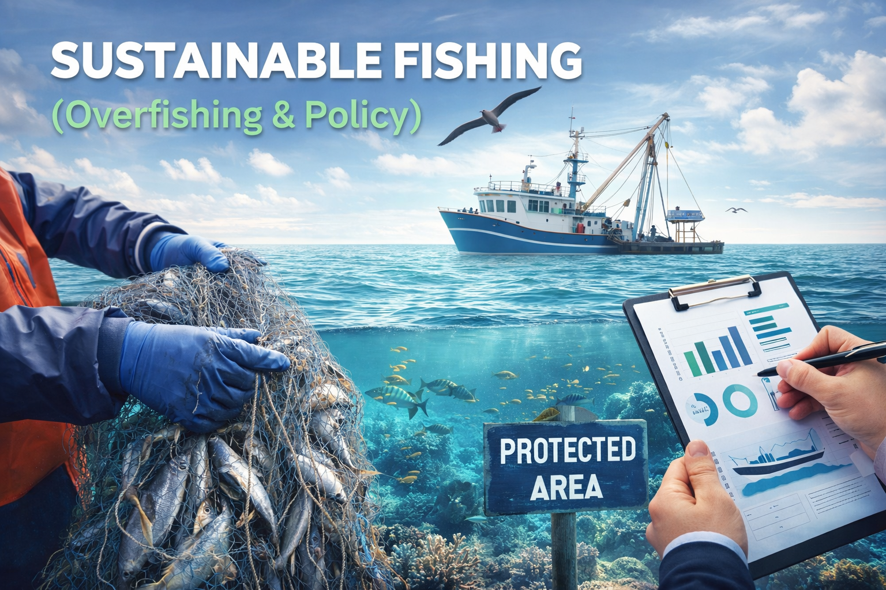
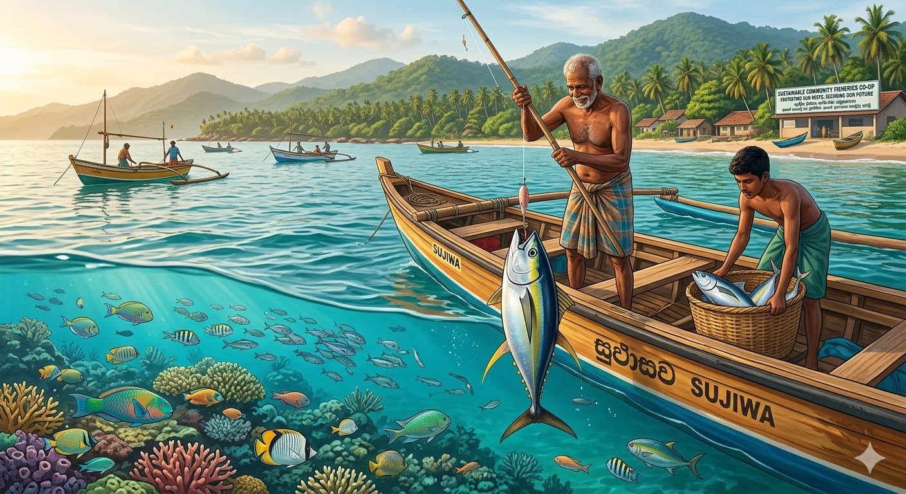
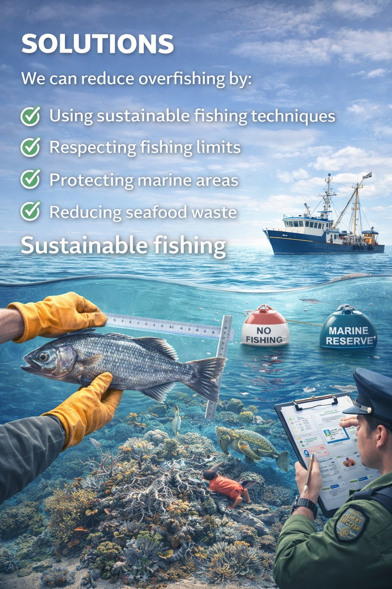
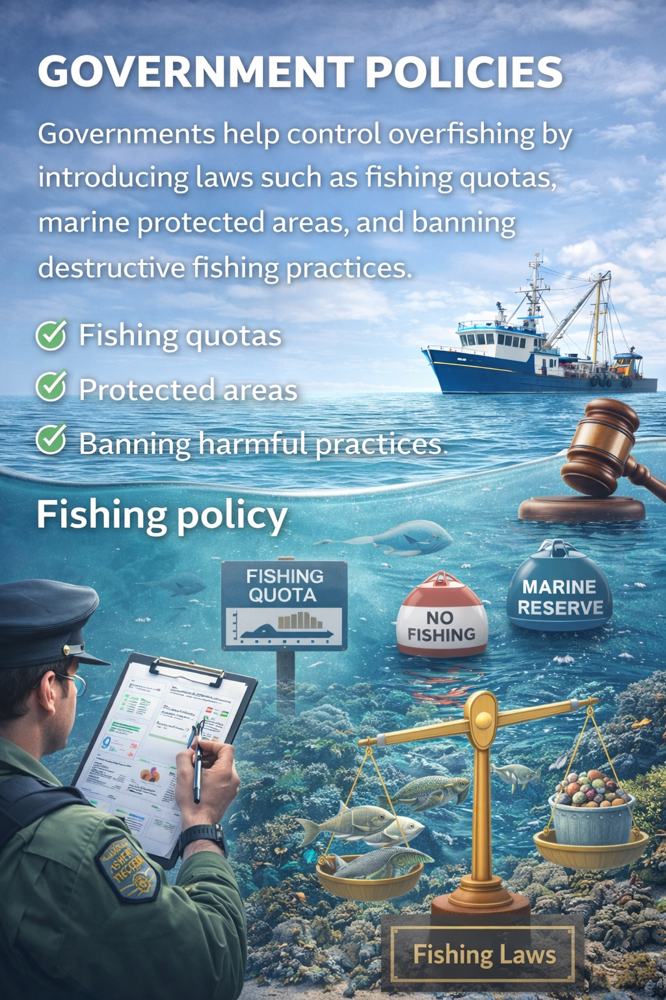

Sustainable Fishing (Overfishing & Policy)
Overfishing Problem
Overfishing occurs when fish are caught faster than they can reproduce. This leads to a serious decline in fish populations and threatens marine ecosystems worldwide.

Environmental Impact
Overfishing damages ocean ecosystems by removing key species. This can disrupt the food chain and lead to the collapse of marine biodiversity.

Solutions
Sustainable fishing helps reduce overfishing and protect marine life. It includes setting catch limits, using eco-friendly fishing methods, and protecting ocean areas to keep fish populations stable for the future. We can reduce overfishing by:
- Using sustainable fishing techniques
- Respecting fishing limits
- Protecting marine areas
- Reducing seafood waste

Government Policies
Governments help control overfishing by introducing laws such as fishing quotas, marine protected areas, and banning destructive fishing practices.

Go to Top